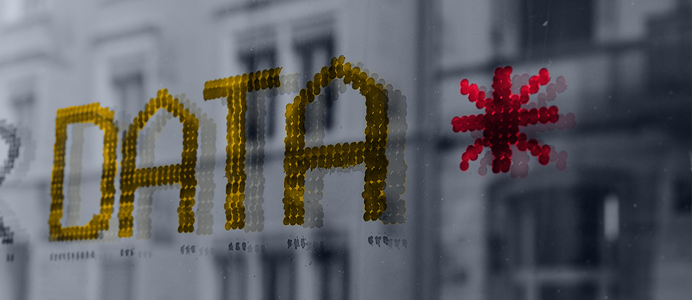

Scope the delivery gap
Map the open full-stack work across Compass, partner workflows, and current release risks with your product owner.
Ben, we saw ISS-Corporate is hiring a Senior Full Stack Software Developer and another software engineer. That usually means product work is moving faster than the current team can staff it.
Here is a focused way Elinext could help keep Compass, reporting, and partner work moving while ISS-Corporate hires permanent talent.
ISS-Corporate is scaling a serious SaaS platform, not a simple website. The full-stack hiring signal points to active work across Compass, reporting, and partner flows. The hard part is likely delivery load around trusted data, client workflows, and new ISSB reporting needs. If senior seats stay open, partner work can slip and internal teams carry too much release risk.
We would place a dedicated squad under your PO or PM, starting with a six-week pilot and weekly demos.
Map the open full-stack work across Compass, partner workflows, and current release risks with your product owner.
Add two senior full-stack engineers to build prioritized web features while the permanent hiring search continues.
Create Playwright checks for login, data verification, and partner handoff flows so each release gets repeatable coverage.
Review API, reporting, and data import paths that support advisory firms and sustainability reporting clients.

Elinext built a Python and Angular analytics platform for financial market users, expanding from MVP as scope grew.
Read case study
Continuous QA helped a regulated insurtech platform reduce post-launch defects and improve product stability.
Read case study